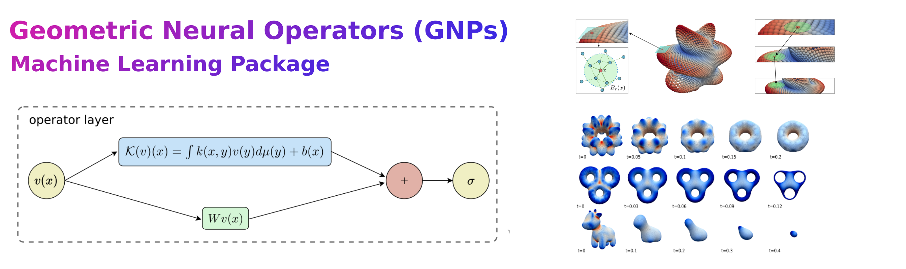

Geometric Neural Operator documentation
{kind=link}
Geometric Neural Operators (GNPs) allow for data-driven deep learning of features from point-cloud representations and other datasets for tasks involving geometry. This includes training protocols and learned operators for estimating local curvatures, evaluating geometric differential operators, solvers for PDEs on manifolds, mean-curvature shape flows, and other tasks. The package provides practical neural network architectures and factorizations for training to accounting for geometric contributions and features. The package also has a modular design allowing for use of GNPs within other data-processing pipelines. Pretrained models are also provided for estimating curvatures, Laplace-Beltrami operators, components for PDE solvers, and other geometric tasks.
If you find these methods or codes helpful in your project, please cite:
P J Atzberger B Quackenbush. “Geometric neural operators (gnps) for data-driven deep learning in non-euclidean settings.” In: Machine Learning: Science and Technology 5.4 (2024). issn: 2632-2153. url: https://iopscience.iop.org/article/10.1088/2632-2153/ad8980.
Package Reference: